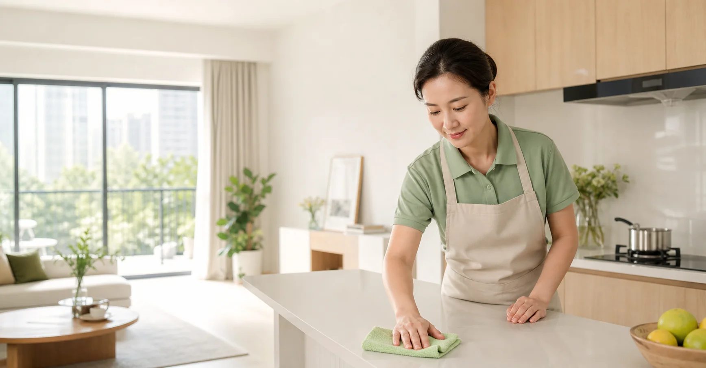
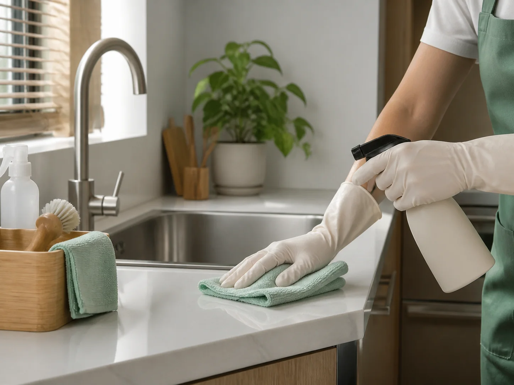

高频选择
城市家庭保洁 · 预约制服务
把清爽还给家，
把时间留给你
从日常保洁到重点深度清洁，服务前确认范围，服务后共同验收。让每一次上门，都清楚、安心、有标准。
- 服务人员信息核验
- 工具分区使用
- 项目清单确认

预约前先确认清单演示内容 · 以实际服务为准
01 专业家庭保洁
范围说清楚服务前确认项目与重点区域
过程有标准按区域和顺序规范完成
结果可验收服务后共同检查与反馈
核心服务
不同家庭状态，
匹配不同清洁方案
页面把适用场景、重点内容和预约方式集中呈现，帮助客户快速找到合适的服务。以下为演示内容，正式项目应替换为商家的真实范围与价格。

重点焕新
明亮视野
服务过程示意图
我们的服务主张
家政服务不只是一句
“打扫干净”
真正让客户安心的，是每一步都有说明：谁来服务、做哪些项目、如何计费、怎样验收。
01上门前确认时间、地址范围与服务清单
02服务中按区域推进，重点事项及时沟通
03完成后共同检查，问题集中记录处理
预约流程
四步完成一次
清楚的上门服务
把预约流程提前公开，减少反复询问，也帮助商家更准确地安排人员、工具和服务时间。
- 01聊
说明需求
面积、位置、期望时间和重点区域。
- 02定
确认方案
明确服务范围、预计时长和费用。
- 03净
到家服务
按清单与标准逐区域完成清洁。
- 04验
共同验收
现场确认结果，记录补充事项。
服务标准展示
用真实过程建立信任，
不靠夸大的效果承诺
正式网站应使用获得授权的真实服务图片。演示项目使用生成的写实场景图，并明确标注，避免冒充真实客户案例。
常见问题
预约前，先把这些事情说清楚
透明的信息比华丽承诺更容易赢得信任。
01价格为什么需要先了解需求？
不同面积、现场情况和服务范围会影响工作量。正式页面应展示基础计价方式，并说明需要进一步评估的情况。
02如何确认服务内容？
预约前发送书面服务清单，明确包含项目、不包含项目、额外费用和验收方式。
03临时需要调整时间怎么办？
正式页面应写明改期和取消规则，并保留可直接联系商家的电话或微信入口。
预约咨询
告诉我们你的需求，
先确认是否适合
正式项目可连接电话、企业微信或客户现有系统。当前表单仅展示交互，不会发送或保存数据。
业务电话请替换为你的号码
业务微信请替换为你的微信